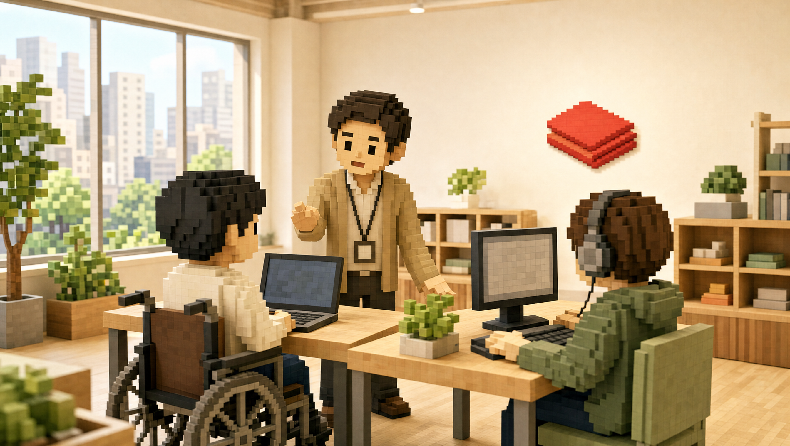
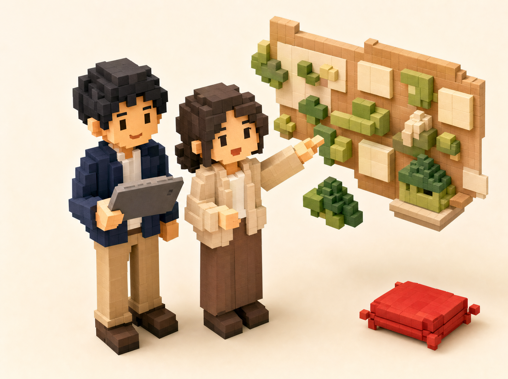
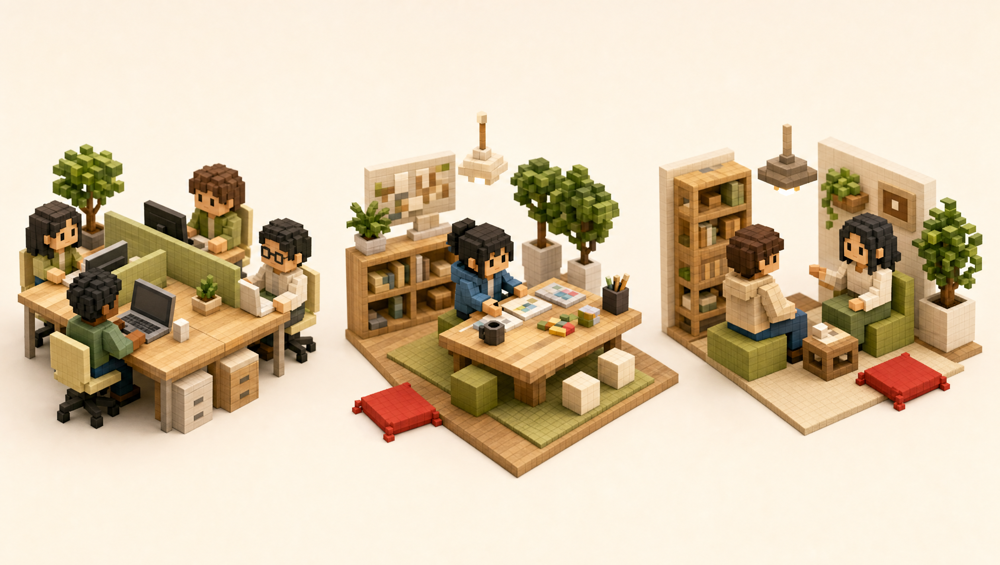

代表取締役

そのお悩み、Zabutonがカリキュラムと伴走サポートで解決します。
IT技術×福祉の専門知識を融合した Zabuton が、貴事業所の訓練プログラムをアップデートします。講師派遣・カリキュラム設計から運用伴走まで、ワンストップで対応します。私たち自身、開発も運営もアジャイル／スクラムという短いサイクルの進め方で回しています。カリキュラムも一度きりの納品にせず、現場の反応を見ながら一緒に育てていきます。

Web開発・データ管理・ECサイト構築など、企業が即戦力として期待するスキルに対応したカリキュラムを提供。利用者のレベルや目標に合わせてカスタマイズできます。
施設への出張サポートと、ビデオ通話を活用したオンライン指導の両方に対応。全国の事業所と連携でき、通所形態に縛られない柔軟な訓練環境を整えます。
最新プログラム。AIエージェントを活用したITエンジニア育成支援で、利用者のキャリア選択肢を最前線の技術領域へと広げます。
2025年5月開始社会福祉士と技術コーチが連携し、訓練の設計から運用、定着まで継続的に伴走。IT知識と福祉現場のノウハウの両方を持つチームが貴事業所をサポートします。
IT/DX訓練を提供できる事業所として、利用者・家族・関係機関からの信頼と認知が高まります。
IT職種・テレワーク可能な職種へのアクセスが広がり、利用者一人ひとりの就労可能性が高まります。
IT指導の専門部分をZabutonが担うため、職員は本来の支援業務に集中できる環境を整えられます。
訓練から企業との接点づくりまで連携して支援。訓練の成果が就職という形で結実しやすくなります。
提携・加盟
ご相談から運用開始まで、Zabutonがステップバイステップで伴走します。
現在の訓練内容・利用者の状況・課題感を丁寧にヒアリング。まずはお気軽にご連絡ください。プレッシャーなし、情報収集だけのご相談も大歓迎です。
ヒアリング内容をもとに、貴事業所の利用者像・目標就労先に合わせた訓練プランを提案。既存のプログラムとの組み合わせも検討します。
合意したプランに基づき、IT/DXカリキュラムの提供を開始。オンライン・オフラインを組み合わせ、利用者のペースに合わせて進めます。
定期的なふりかえりで訓練内容を継続改善します。利用者の就労へのステップも、Zabutonのマッチング支援と連携してサポートします。
事業所のタイプや課題に合わせた導入イメージをご紹介します。

TYPE A 就労継続支援B型事業所
IT訓練の専任講師を確保できない事業所では、Zabutonのカリキュラムと技術コーチが訓練の専門部分を担います。職員は本来の生活支援・就労支援に集中できるため、業務負担の軽減が期待できます。
TYPE B 就労継続支援A型事業所
実務直結のIT/DXスキルを訓練に取り入れることで、IT職種・テレワーク可能な求人への応募につながりやすくなります。オンライン対応も充実しているため、体調管理が必要な利用者にも継続的な訓練環境を提供できます。
TYPE C 就労移行支援事業所
社会福祉士と技術コーチが連携してカリキュラムを設計するため、IT知識のない職員でも安心して導入を進められます。訓練から就労に向けた橋渡しまで連携してサポートし、就労という形での成果を目指します。
導入前によく寄せられるご質問をまとめました。
就労継続支援A型・B型、就労移行支援事業所が主な対象です。事業所の規模や利用者数を問わず、まずはお気軽にご相談ください。
導入規模やカリキュラムの内容によって異なります。初回ご相談は無料ですので、まずはお問い合わせください。事業所の状況をヒアリングしたうえでご提案いたします。
はい、対応できます。IT指導の専門部分はZabutonの技術コーチが担当しますので、事業所の職員にIT専門知識は不要です。社会福祉士と技術コーチが連携してサポートします。
両方に対応しています。施設への出張訪問によるオフライン指導と、ビデオ通話を活用したオンライン指導のどちらも選択可能です。事業所の状況に合わせて組み合わせることもできます。
具体的な実績については、ご相談の際に担当者からご説明いたします。お気軽にお問い合わせください。
もちろんです。情報収集や比較検討のためのご相談も大歓迎です。初回ご相談は無料で、導入を前提とせずにお話しいただけます。
採用企業・公共機関の方へのご案内、またはお問い合わせはこちらから。